Création visuelle & identité
- Identités visuelles, branding & logo design
- Supports imprimés et digitaux
- Direction artistique
- Sites internet & CMS (WordPress)
- Campagnes & communication digitale
- Photographie & drone FPV
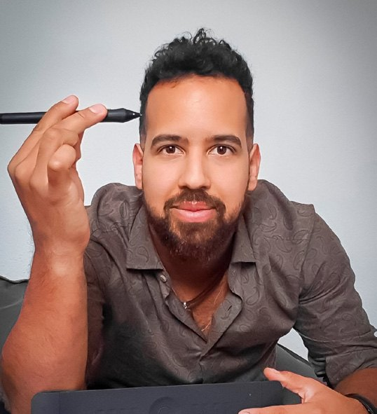
Disponible — emploi & petits mandats
Je suis Adrien Thétaz, collaborateur marketing & création visuelle à Martigny — 15 ans d'expérience en identité de marque, supports imprimés et digitaux, UX/UI et contenus. Formé en graphisme et en marketing, je passe de l'idée de campagne aux supports concrets, sans intermédiaire.
Trois piliers, tirés directement de mon CV — la version complète est à un clic.
Chacune de mes créations est évaluée selon mon propre protocole, le SL-60™ — 41 logotypes et illustrations référencés pour des entreprises, institutions et tables de Suisse romande.
Du skieur de Coupe du monde à la boucherie de village : design, contenu et mise en ligne, de A à Z.
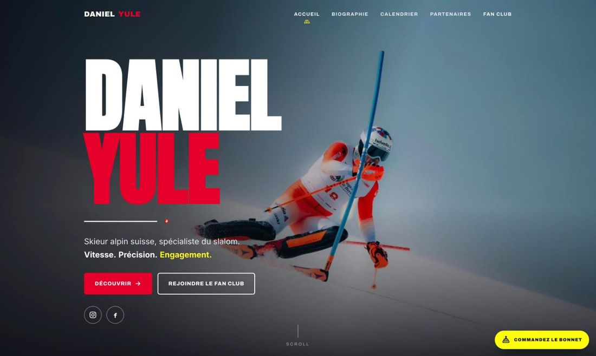
Site officiel du skieur alpin suisse, spécialiste du slalom : bio, calendrier, partenaires et fan club.
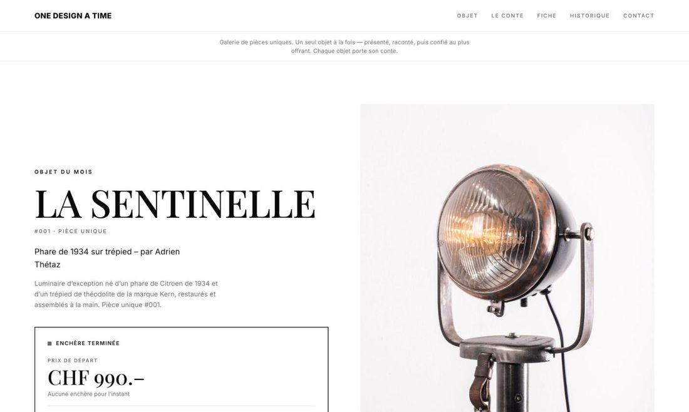
Galerie d'objets uniques avec enchères — un seul objet à la fois, présenté et raconté.
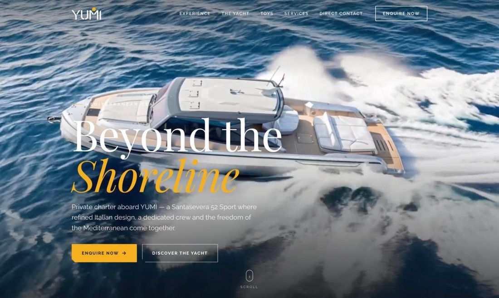
Location privée d'un yacht en Méditerranée, avec capitaine et équipage — univers haut de gamme.
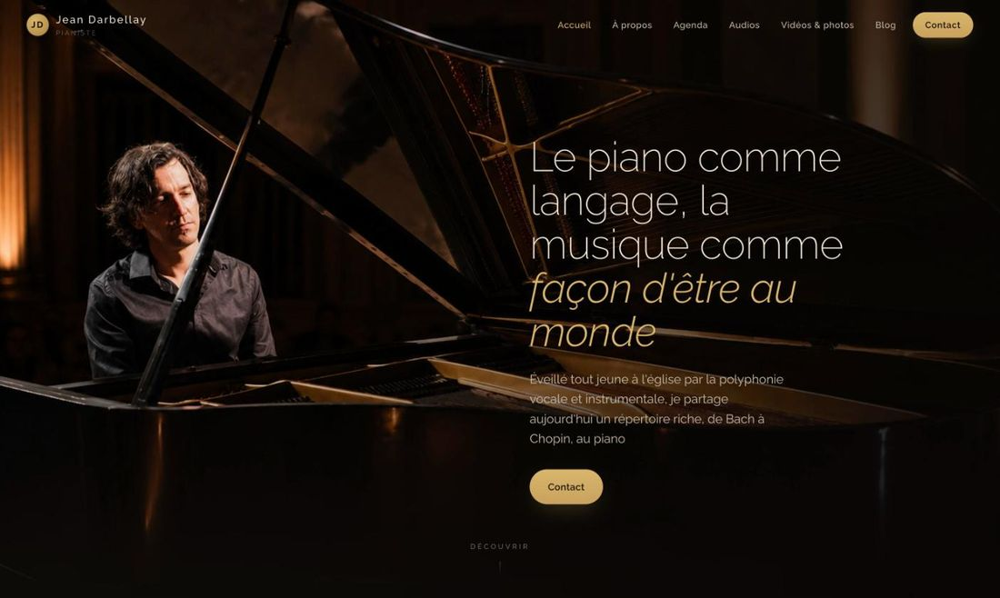
Site du pianiste et accordéoniste : répertoire, écoutes, vidéos, agenda et réservation de concerts.
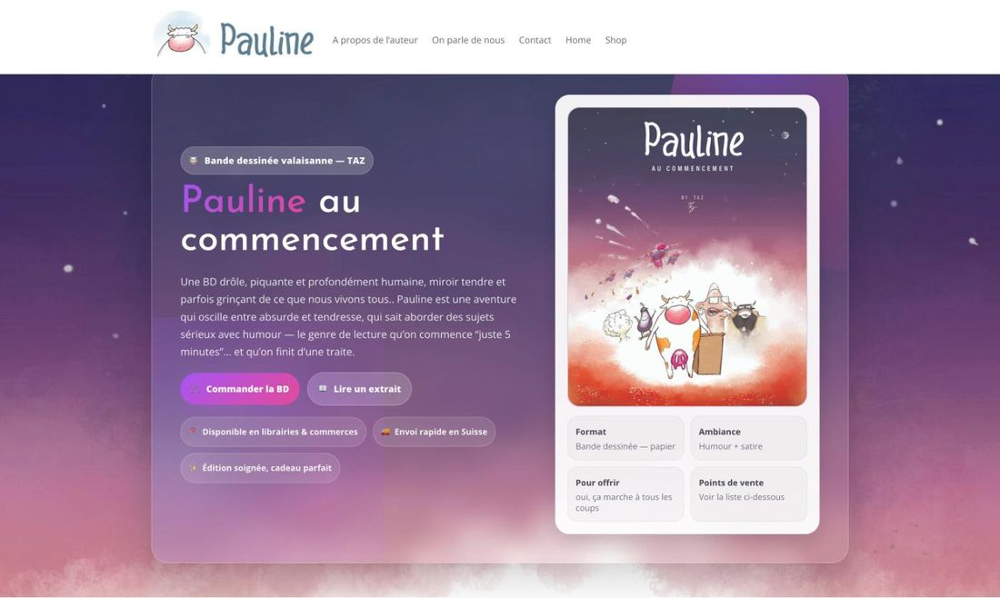
Mon projet éditorial : BD de 104 pages, 1300 exemplaires en Suisse romande. Dessin, édition, vente.
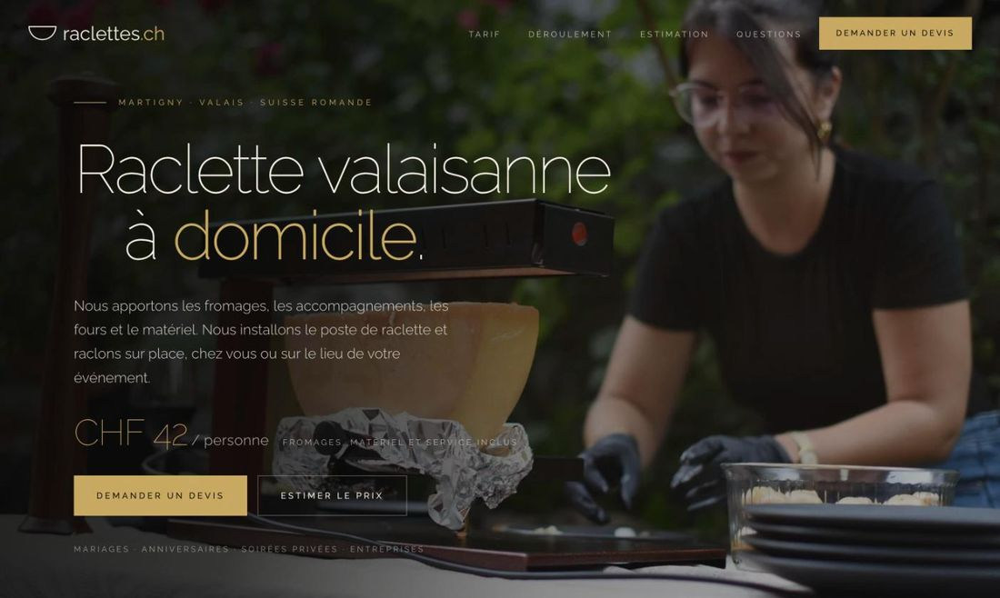
Raclette valaisanne à domicile — mariages, fêtes privées et événements d'entreprise.
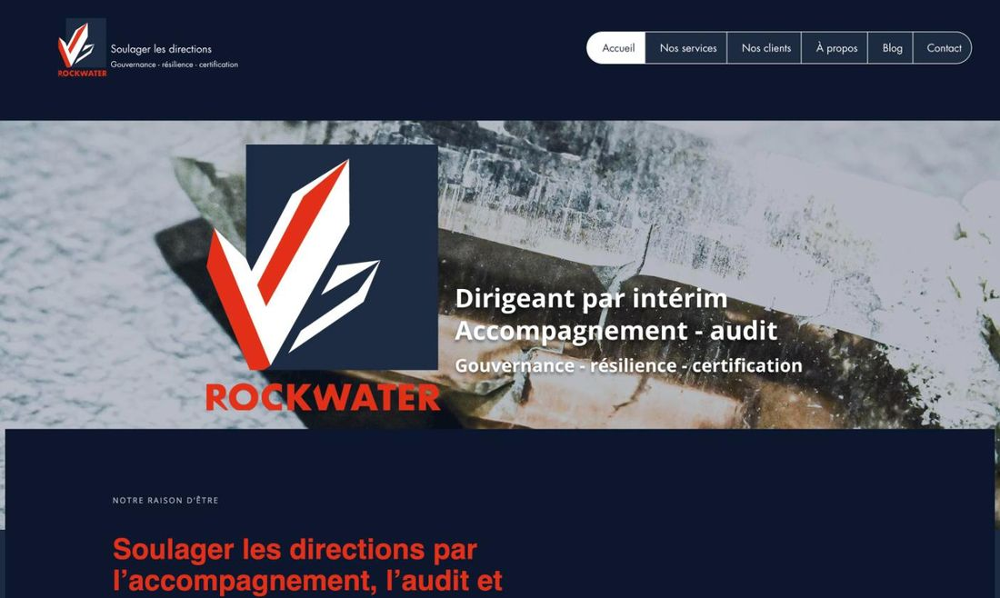
Cabinet de conseil suisse : COO externalisé, gouvernance, continuité d'activité et formation.
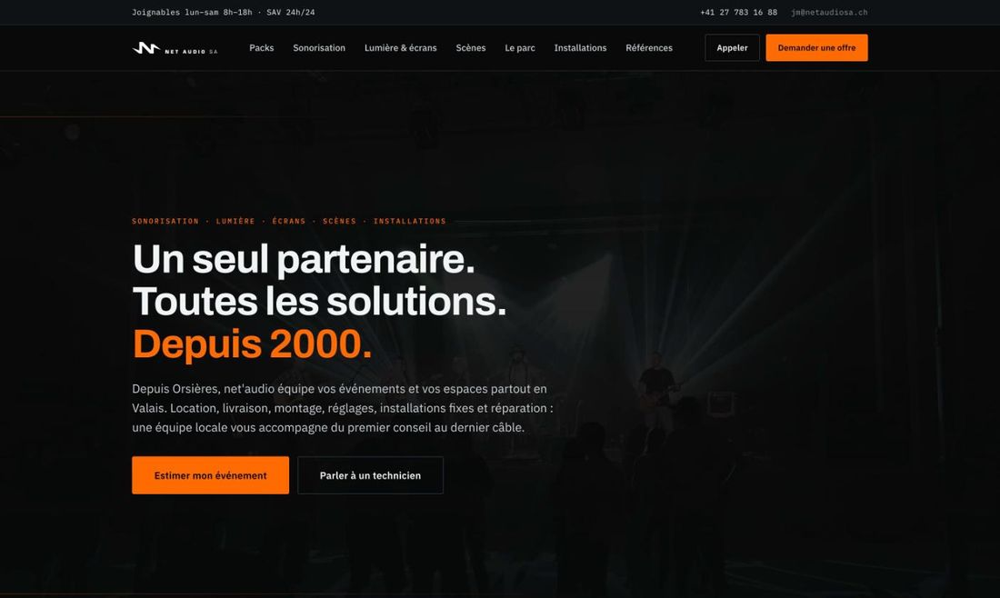
Sonorisation, éclairage, écrans LED et scènes pour événements, partout en Valais depuis Orsières.
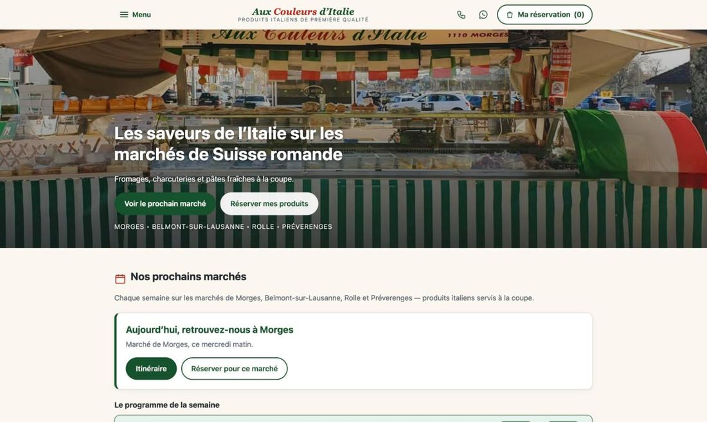
Spécialités italiennes tranchées à la demande sur les marchés romands — réservation et paniers cadeaux.
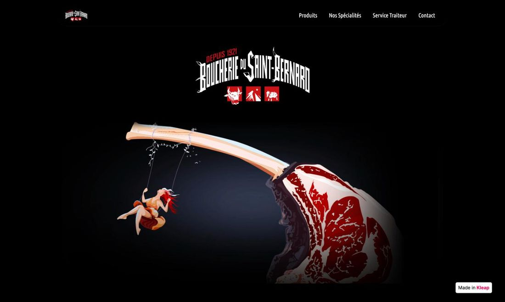
Site vitrine d'une boucherie artisanale de la région du Grand-St-Bernard.
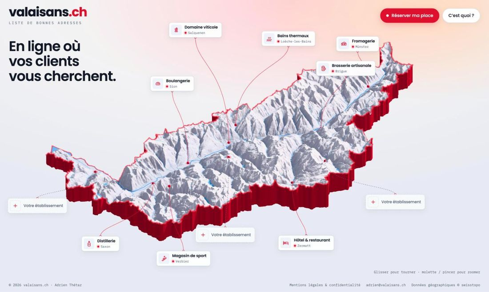
Ma « liste de bonnes adresses du Valais » : une à deux places par métier et par secteur.
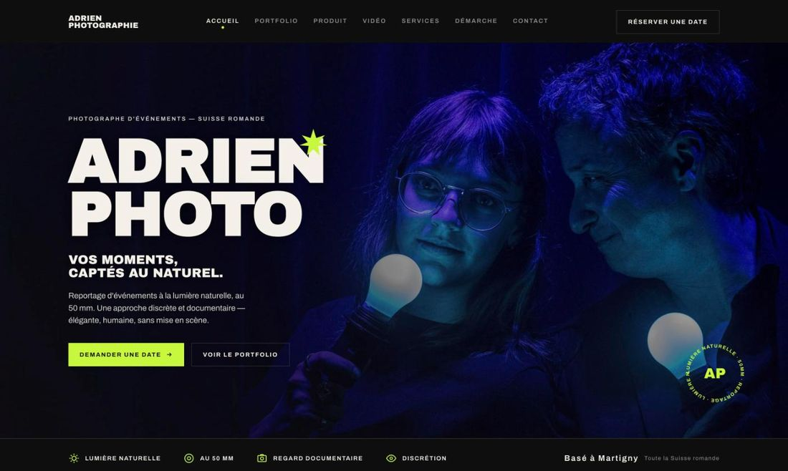
Mon studio photo : reportages documentaires à la lumière naturelle, photo produit et vidéo drone.
Marques internationales, agences, immobilier, start-up — puis l'indépendance.
Je cherche une entreprise locale solide et humaine — et je reste disponible pour vos mandats ponctuels en design, web et communication. Je réponds vite.